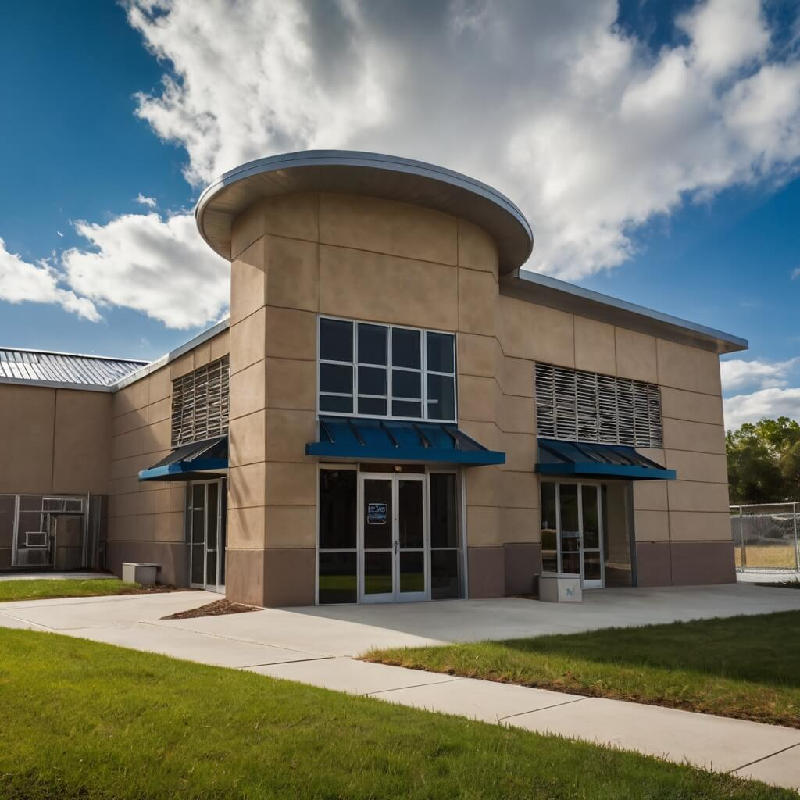
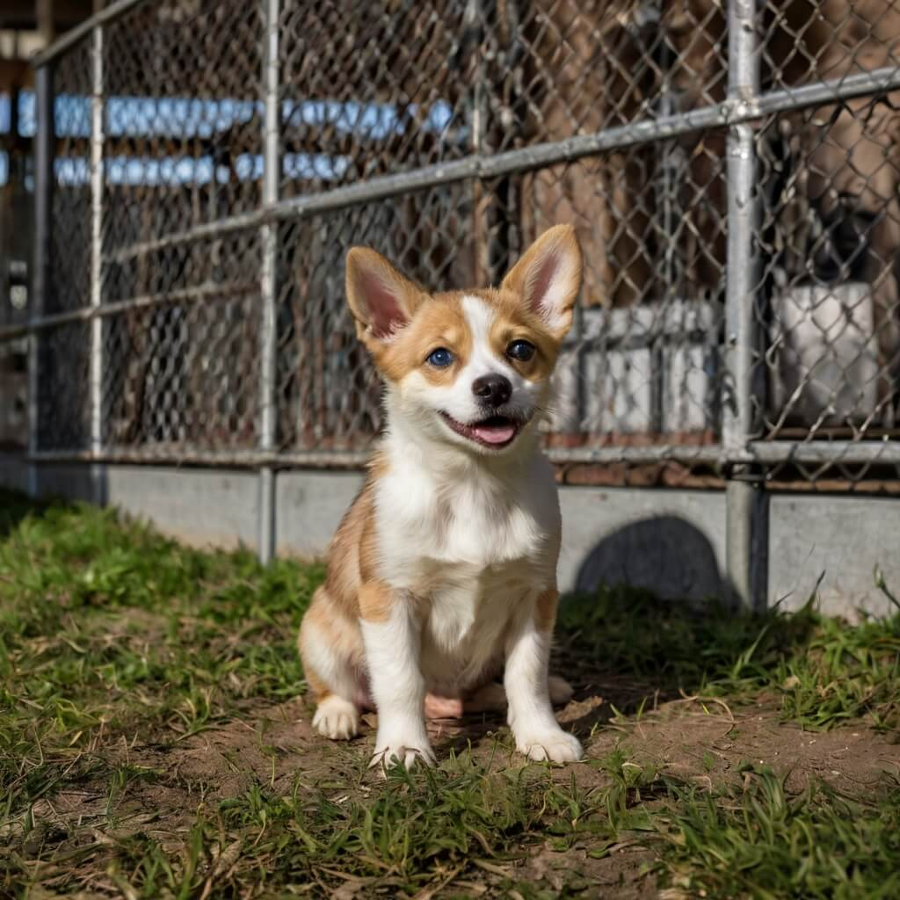
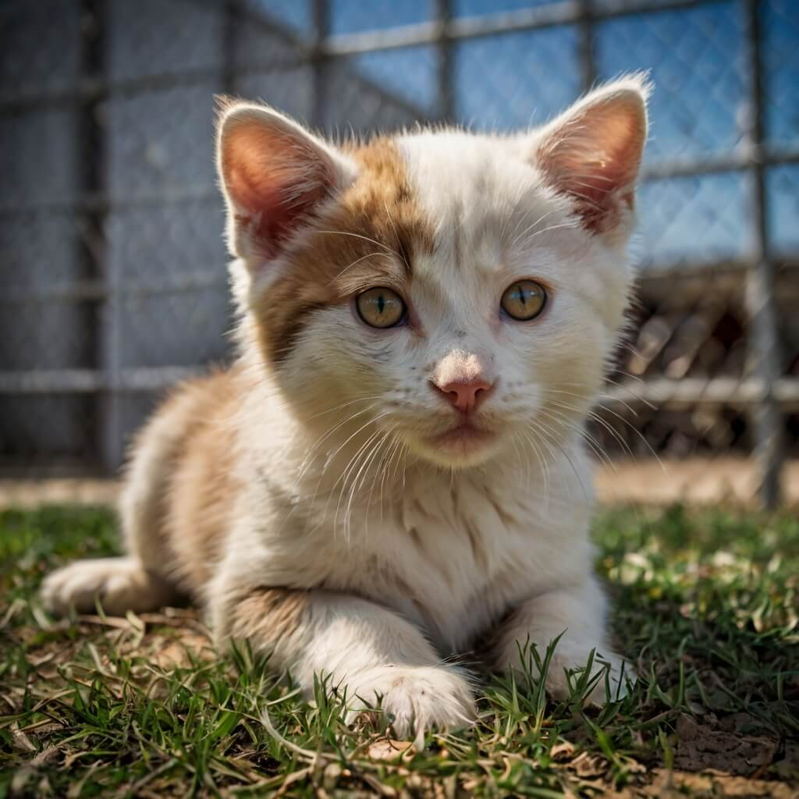
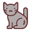
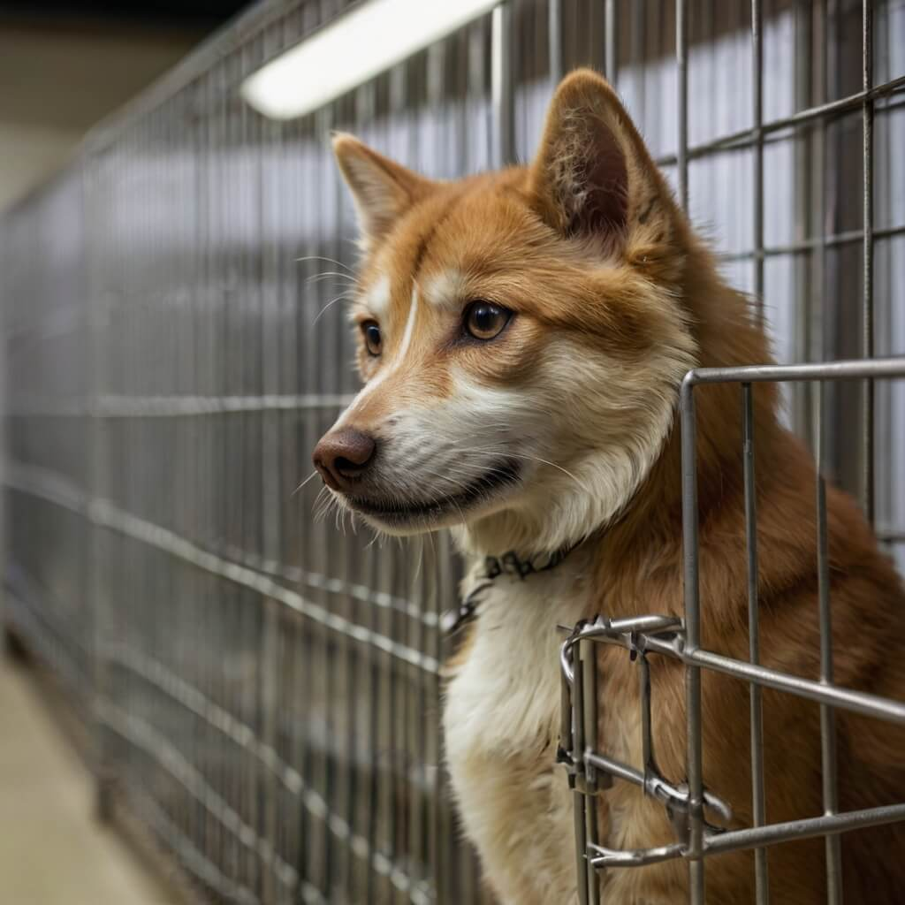
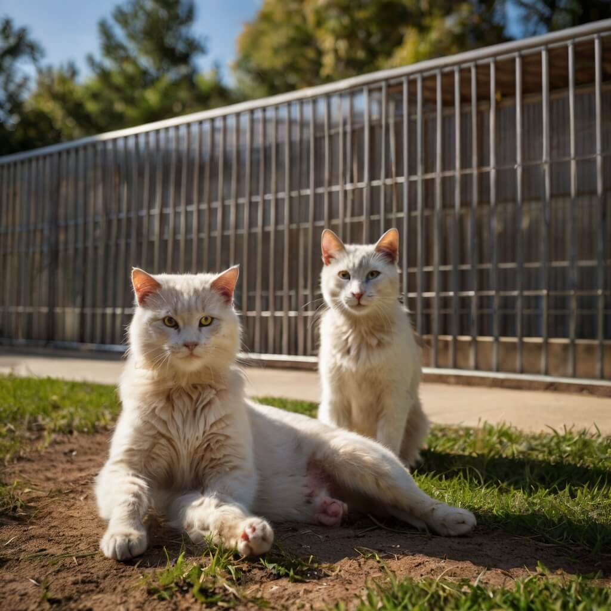
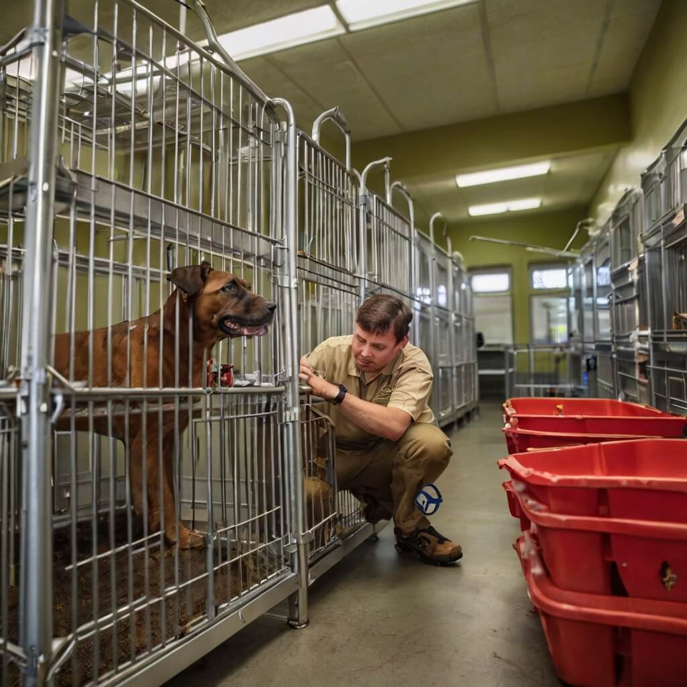
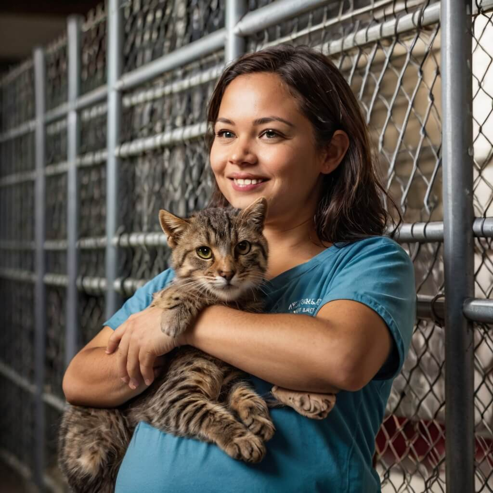

WildEmbrace - A Second Chance for Every Paw
At WildEmbrace, we believe every animal deserves love, care, and a safe place to call home. Our mission is to rescue, rehabilitate, and rehome abandoned and neglected animals, giving them the chance to thrive. Whether it's a lost soul in need of comfort or a spirited companion searching for a family, we are here to create heartwarming stories of hope and transformation. Join us in making a difference, one paw at a time.


We believe that every animal deserves a second chance, and our work is a testament to the power of compassion and love. Whether you're looking to adopt a new furry friend, volunteer your time, or donate to support our cause, we welcome you to join our community of animal lovers.
See how WildEmbrace turns heartbreak into happiness, one rescue at a time.
With over 5,000 rescues and counting, WildEmbrace has become a sanctuary of hope. Every life we touch reminds us why we do what we do—to provide safety, love, and a future full of possibilities.
Every adoption writes a new chapter of love and loyalty. Be part of the story. You can help us make a difference by volunteering, donating, or adopting an animal in need. Together, we can create a world where every animal knows love and respect.

Our Journey
Adoptions Completed
Through dedication and compassion, we’ve placed over 4,200 animals into loving homes. Every adoption is a testament to the power of kindness and second chances. We believe that every animal deserves a loving home, and we work tirelessly to ensure that they receive the care and love they deserve.
Years of Compassion
For 12 years, we have been committed to rescuing animals, providing them with care, and finding them the families they deserve. During this time, we have built a community of animal lovers who share our vision of a world where every animal is cherished and respected. We are proud of the work we have done, but we know there is still much to be done. We invite you to join us on this journey, and together, we can make a difference in the lives of animals everywhere.
Happy Endings
With a 98% success rate in finding forever homes, we continue to ensure that every animal gets the love and stability they need to flourish. We believe that every animal deserves a second chance at life, and we will continue to work tirelessly to make sure that they receive the care and compassion they deserve. Whether it's a family looking to expand their home or a rescue organization looking to partner with us, we are here to help make a difference in the lives of animals everywhere.
Our Mission

Tailored Care for Every Soul
Each animal has a unique story, and we’re here to make sure they find the right home. Whether shy or playful, every rescued pet receives individual attention to prepare them for their future family.
Forever Friends
For those seeking a lifelong companion, our adoption program ensures that every match is made with love and care, fostering bonds that last a lifetime.
Community Outreach
We believe in educating and empowering communities to promote responsible pet ownership, ensuring a brighter future for all animals.
Change a Life Today

A rescue is more than a second chance—it’s a promise of love, security, and a future filled with joy. At WildEmbrace, we believe that every animal deserves a loving home, and we're committed to providing the care and support they need to thrive. From providing medical care to offering behavioral support, we strive to give our rescues the best possible chance at a happy life. By adopting from WildEmbrace, you're not only saving a life, you're also opening up a space for us to rescue another animal in need.

What Drives Us
At WildEmbrace, we believe that no animal should be forgotten. Every rescue is a victory, every adoption a dream come true. Whether it's a lost soul in need of comfort or a spirited companion searching for a family, we are here to create heartwarming stories of hope and transformation.
From the moment they arrive, to the day they find a home, we are their safety, their voice, their chance for a better tomorrow. We are the ones who provide them with medical care, behavioral support, and most importantly, love. And we are the ones who believe that every animal deserves a loving home, where they can thrive and be cherished for who they are.
We understand that every animal is unique, with their own personality, temperament, and needs. That's why we take the time to get to know each rescue, to understand their quirks and habits, and to provide them with the individualized care they need to thrive.
At WildEmbrace, we don't just rescue animals - we rescue souls. We believe that every animal deserves to be loved, cherished, and respected, and we're committed to providing them with the care and support they need to live a happy, healthy life. Join us in our mission to make a difference in the lives of animals in need.
Give Love. Save Lives.
Adopt, foster, donate—there are so many ways to be a hero. Join WildEmbrace and be the reason a tail wags today.
Every life is precious, and every life deserves a loving home. Help us make a difference in the lives of animals in need. Together, we can change the world, one paw at a time.
- Compassion in Action
- A loving home for every rescued animal
- Your support changes lives—every donation counts
- We’re here 24/7, because every animal deserves care
Frequently Asked Questions

Connect with WildEmbrace Today
Have questions about adoption, volunteering, or donations? We’re here to help you get involved and make a difference.
Reach out and let’s create more happy tails together!
